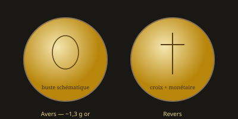

Monnaies mérovingiennes
Du tremissis d'or byzantin au seuil du denier carolingien (Ve–VIIIe siècles)

Une transition entre deux mondes
Après la fin de l'autorité romaine en Gaule, les rois francs mérovingiens (de Childéric et Clovis aux derniers « rois fainéants ») frappent monnaie dans un paysage encore dominé par l'or byzantin. Le solidus et surtout le tremissis (tiers de solidus, ~1,5 g) servent de modèles : les monnaies mérovingiennes sont d'abord des imitations, puis des frappes autonomes au nom des rois, des monétaires et des ateliers locaux.
Cette page prolonge l'arc du site : Rome → solidus constantinien / justinien → or mérovingien → denier carolingien → féodales.
Le tremissis d'or : pièce dominante
Pendant la majeure partie de l'époque mérovingienne, la monnaie d'usage et de prestige est le tremissis d'or, calqué sur le tiers du solidus byzantin. Le solidus complet est plus rare ; l'argent et le bronze jouent un rôle secondaire jusqu'à la fin de la période.
Caractéristiques typiques
Métal : or (titre variable, souvent dévalué avec le temps)
Poids : autour de 1,2–1,5 g selon les émissions et la date
Types : buste à droite ou de face, croix, Victoire, monogrammes
Légendes : d'abord imitées du latin impérial, puis noms de rois,
de monétaires (monetarii) et de lieux de frappe
Des imitations byzantines aux frappes royales
Au Ve–VIe siècle, beaucoup de pièces gauloises copient encore les types de Constantinople ou de Ravenne (buste impérial, Victoire, croix). Progressivement, les rois francs font graver leur nom (Clovis, Childebert, Théodebert, Dagobert, etc.) : la monnaie devient un signe de souveraineté, non plus seulement une imitation de l'or impérial.
Théodebert Ier (534–548) est souvent cité pour avoir frappé de l'or à son nom en rupture explicite avec le monopole symbolique de l'empereur — moment fort de l'affirmation franque face à Byzance.
Monétaires et ateliers
Une singularité mérovingienne : le rôle des monétaires, artisans ou officiers dont le nom apparaît sur les monnaies à côté (ou à la place) de celui du roi. Des centaines d'ateliers sont attestés en Gaule — cités, vici, sanctuaires — ce qui produit un paysage monétaire très fragmenté, à l'opposé du contrôle centralisé de Constantinople (voir ateliers byzantins).
Géographie de la frappe
Ateliers nombreux dans le bassin parisien, la vallée du Rhin, l'Aquitaine, la Provence… Les catalogues modernes (Prou, Belfort, et synthèses plus récentes) recensent types et localisations. Cette dispersion annonce, d'une certaine manière, le futur monnayage féodal.
Baisse du titre et crise de l'or
Au VIIe siècle, le titre d'or des tremissis tend à baisser ; l'approvisionnement en métal précieux se tarit. L'Occident se détache progressivement de l'étalon byzantin. C'est le contexte dans lequel les Pippinides, puis Pépin et Charlemagne, imposeront le denier d'argent et le monopole royal de frappe.
Enchaînement
Solidus / tremissis byzantins → tremissis mérovingiens (or, puis dévalués) → réforme carolingienne (argent) → deniers féodaux.
Voir Réformes monétaires et Systèmes de poids.
Lire une monnaie mérovingienne
On repère : le métal (or jaune plus ou moins pâle), le poids (souvent < 1,5 g), le buste (style schématique, loin du réalisme antonin), la croix ou la Victoire au revers, et les légendes (nom de roi, de monétaire, de lieu). Chaque pièce documente un pouvoir local autant qu'une tradition impériale héritée.
Place dans le récit du site
Les monnaies mérovingiennes sont le chaînon entre l'Empire byzantin (solidus, CONOB, ateliers) et le monde carolingien puis féodal. Elles montrent comment l'image et le poids de Rome survivent en Gaule sous d'autres noms — jusqu'à ce que le denier d'argent refonde l'économie occidentale.
Système pondéral carolingien →
Sources : numismatique mérovingienne (Prou, Belfort, travaux récents) ; filiation avec le tremissis byzantin et la réforme carolingienne.